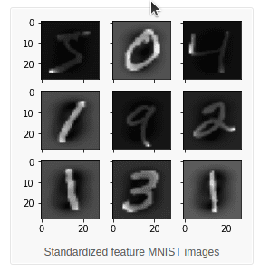
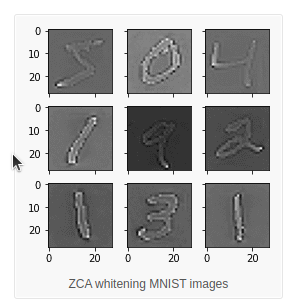
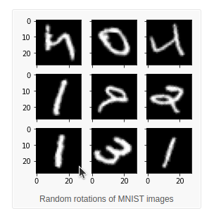
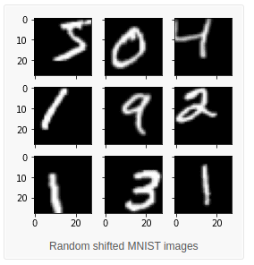
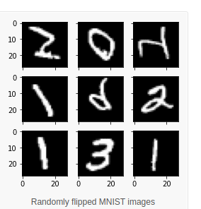

Lecture 9a: Overview of ways to improve generalization
In the discussion of overfitting, we assume that the bottleneck of our ability to do machine learning is the amount of data that we have; not the amount of training time or computer power that we have.
Reminder: Overfitting
- The training data contains information about the regularities in the mapping from input to output. But it also contains sampling error.
- There will be accidental regularities just because of the particular training cases that were chosen.
- When we fit the model, it cannot tell which regularities are real and which are caused by sampling error.
- So it fits both kinds of regularity. If the model is very flexible it can model the sampling error really well.
Preventing overfitting
Four approaches to reduce overfitting due to too many parameters to training rows:
- Get more data - the best option.
- Use a model that has the right capacity:
- enough to fit the true regularities.
- not enough to fit spurious data.1
- Average models.
- Ensambling use models with different forms.
- Bagging train the model on different subsets the training data. 4.: Bayesian:
- use a single NN architecture but average the predictions made by many weight vectors
- Getting more data via augmentation (increases signal to noise)
- consider normalization
- Sample-wise
- Feature wise pixel standardization
- PCA whitening - reduces dimension + whiting
- ZCA the idea is to reducing effect of correlation in adjacent pixels by normalizing feature variance and reducing correlation at features. (does not reduce dimensions of the data)
| transform | image |
|---|---|
| Original |  |
| Feature Standardization |  |
| ZCA whitening |  |
| Random Rotations |  |
| Random shifts |  |
| Random Flips |  |
| Random affine transforms |  |
| Contrast Stretching | |
| Histogram Equalization |  |
| Adaptive Histogram Equalization |  |
| CLAHE contrast stretching + adaptive histogram equalization = Contrast limited adaptive histogram equalization |  |
consider augmentation. random crop/rotation/shear/mirroring/flip scaling blocking out rectangles elastic deformation mesh (used in Unet) contrast stretching + adaptive histogram equalization = Contrast limited adaptive histogram equalization (CLAHE) ZCA whitening transform
Standardized Feature MNIST Images ZCA Whitening MNIST Images random affine transforms
Contrast Stretching Histogram Equalization Adaptive Histogram Equalization
code: image-augmentation-deep-learning-keras (on nminst) data augmentation with elastic deformations
How to choose meta parameters that control capacity2
- The wrong method is to try lots of alternatives and see which gives the best performance on the test set. – This is easy to do, but it gives a false impression of how well the method works. – The settings that work best on the test set are unlikely to work as well on a new test set drawn from the same distribution.
- An extreme example: Suppose the test set has random answers that do not depend on the input.
- The best architecture will do better than chance on the test set.
- But it cannot be expected to do better than chance on a new test set.
Cross-validation: A better way to choose meta parameters
- Divide the total dataset into three subsets:
- Training data is used for learning the parameters of the model.
- Validation data is not used for learning but is used for deciding what settings of the meta parameters work best.
- Test data is used to get a final, unbiased estimate of how well the network works. We expect this estimate to be worse than on the validation data.
- We could divide the total dataset into one final test set and N other subsets and train on all but one of those subsets to get N different estimates of the validation error rate.
- This is called N-fold cross-validation.
- The N estimates are not independent.
Preventing overfitting by early stopping
- If we have lots of data and a big model, its very expensive to keep re-training it with different sized penalties on the weights.
- It is much cheaper to start with very small weights and let them grow until the performance on the validation set starts getting worse.
- But it can be hard to decide when performance is getting worse.
- The capacity of the model is limited because the weights have not had time to grow big.
Why early stopping works
- When the weights are very small, every hidden unit is in its linear range.
- So a net with a large layer of hidden units is linear.
- It has no more capacity than a linear net in which the inputs are directly connected to the outputs!
- As the weights grow, the hidden units start using their non-linear ranges so the capacity grows.
Lecture 9b: Limiting the size of the weights
Limiting the size of the weights
{kind=link}
The standard L2 weight penalty involves adding an extra term to the cost function that penalizes the squared weights. - This keeps the weights small unless they have big error derivatives.
C = E + \frac{\lambda}{2}\sum_i w_i^2
\frac{\partial C}{\partial w_i} = \frac{\partial E}{\partial w_i} + \lambda w_i
when
\frac{\partial C}{\partial w_i} = 0 \implies w_i=-\frac{1}{\lambda} \frac{\partial E}{\partial w_i} There is some math in this video. It’s not complicated math. You should make sure to understand it.
Lecture 9c: Using noise as a regularizer
adding noise to the input can have a regularizing effect. Think lets add noise to a picture - it drowns out most of the small features say blurring them. But for large items - we are trying to learn - they look mostly the same. The advantage is that adding noise is easy. Anyhow - this is more of a buildup of an abstract idea that will later be interpreted using full Bayesian learning. L2 weight-decay via noisy inp Suppose we add Gaussian noise to the inputs. — The variance of the noise is amplified by the squared weight before going into the next layer. In a simple net with a linear output unit directly connected to the inputs, the amplified noise gets added to the output. This makes an additive contribution to the This slide serves to show that noise is not a crazy idea. The penalty strength can be thought of as being
σ2i , or twice that (to compensate for the 1/2 in the weight decay cost function), but that detail is not important here. Second slide (the math slide)
The reason why the middle term is zero is that all of the epsilons have mean zero. You may notice that the result is not exactly like the L2 penalty of the previous video: the factor 1/2 is missing. Or equivalently, the strength of the penalty is not sigma i squared, but twice that. The main point, however, is that this noise is equivalent to an L2 penalty. Jargon: overfitting, underfitting, generalization, and regularization Overfitting can be thought of as the model being too confident about what the data is like: more confident than would be justified, given the limited amount of training data that it was trained on. If an alien from outer space would take one look at a street full of cars (each car being a training case), and it so happens that there were only two Volkswagens there, one dark red and one dark blue, then the alien might conclude “all Volkswagens on Earth are of dark colours.” That would be overfitting. If, on the other hand, the alien would be so reluctant to draw conclusions that he even fails to conclude that cars typically have four wheels, then that would be underfitting. We seek the middle way, where we don’t draw more than a few unjustified conclusions, but we do draw most of the conclusions that really are justified. Regularization means forcing the model to draw fewer conclusions, thus limiting overfitting. If we overdo it, we end up underfitting. Jargon: “generalization” typically means the successful avoidance of both overfitting and underfitting. Since overfitting is harder to avoid, “generalization” often simply means the absence of (severe) overfitting. The “accidental regularities” that training data contains are often complicated patterns. However, NNs can learn complicated patterns quite well. Jargon: “capacity” is learning capacity. It’s the amount of potential (artificial) brain power in a model, and it mostly depends on the number of learned parameters (weights & biases).
Lecture 9d: Introduction to the full Bayesian approach
The full Bayesian approach could provide an alternative to using SGD. However with the exception of very simple models it is usually computationally intractable as it requires finding the prior distribution for all the parameters.
We can start with an prior P(params) - and adjust it given each training item.
Given some data we would have to calculate its likelihood i.e. p(data)
But to do this we would need to see how it effects all parameter settings - this is the real issue as for 10 settings for 100 nodes we would need to test 10^100 weight combinations…
this is an outline of the Bayesian approach.
there is a prior distribution over parameters, there is data, say the training data and we can calculate its likelihood and combine it with the prior to get a posterior.
With sufficient Bayesian updating will in the limit beat an uninformative prior.
but he does not go into how much data. The Bayesian framework The Bayesian framework assumes that we distribution for everything. — The prior may be very vague. — When we see some data, we combine our with a likelihood term to get a posterior distr — The likelihood term takes into account how observed data is given the parameters of th
a 100 coin tosses motivates the frequentist approach which uses the (ML) maximal likelihood estimate of the probability.
Next calculates the ml is 0.53 by differentiating and setting the derivative equal to zero. Next asks what if we have only one coin toss. which is a kin to asking “what if the experiment is too small and there are unobserved outcomes?” in which case we cannot account for their likelihood in a ML estimate. A coin tossing example Suppose we know nothing about coins excep tossing event produces a head with some unl probability p and a tail with probability I-p. — Our model of a coin has one parameter, p Suppose we observe 100 tosses and there al What is p? here D is the data and W is a set of weights.
Bayes Theorem joint probability prior probability of weight vector W probabilit data give p(W) p(DlW) ID)
However, it may be possible to approximate a prior. The terms “prior”, “likelihood term”, and “posterior” are explained in a more mathematical way at the end of the video, so if you’re confused, just keep in mind that a mathematical explanation follows. For the coin example, try not to get confused about the difference between “p” (the probability of seeing heads) and “P” (the abbreviation for “probability”). Jargon: “maximum likelihood” means maximizing the likelihood term, without regard to any prior that there may be. At 8:22 there’s a slightly incorrect statement in the explanation, though not in the slide. The mean is not at .53 (although it is very close to that). What’s really at .53 is the mode, a.k.a. the peak, a.k.a. the most likely value. The Bayesian approach is to average the network’s predictions, at test time, where “average” means that we use network parameters according to the posterior distribution over parameter settings given the training data. Essentially, we’re averaging the predictions from many predictors: each possible parameter setting is a predictor, and the weight for that weighted average is the posterior probability of that parameter setting. “It’s helpful to know that whenever you see a squared error being minimized, you can make a probabilistic interpretation of what’s going on, and in that probabilistic interpretation, you’ll be maximizing the log probability under a Gausian.” So the proper Bayesian approach, is to find the full posterior distribution over all possible weight vectors. If there’s more than a handful of weights, that’s hopelessly difficult when you have a non-linear net. Bayesians have a lot of ways of approximating this distribution, often using Monte Carlo methods. But for the time being, let’s try and do something simpler. Let’s just try to find the most probable weight vector. So the single setting of the weights that’s most probable given the prior knowledge we have and given the data. So what we’re going to try and do is find an optimal value of W by starting with some random weight vector, and then adjusting it in the direction that improves the probability of that weight factor given the data. It will only be a local optimum. The Bayesian interpretation of weight -log I D) = —logp(D I W) 1 (yc -tc)2 1)
assuming that the model makes a Gaussian prediction — log p(W) 20w t assuming a for the weig
Lecture 9e: The Bayesian interpretation of weight decay
Supervised Maximum Likelihood Learning
In this video, we use Bayesian thinking (which is widely accepted as very reasonable) to justify weight decay (which may sound like an arbitrary hack). Maximum A Posteriori (MAP) learning means looking for that setting of the network parameters that has greatest posterior probability given the data. As such it’s somewhat different from the simpler “Maximum Likelihood” learning, where we look for the setting of the parameters that has the greatest likelihood term: there, we don’t have a prior over parameter settings, so it’s not very Bayesian at all. Slide 1 introduces Maximum Likelihood learning. Try to understand well what that has to do with the Bayesian “likelihood term”, before going on to the next slide. The reason why we use Gaussians for our likelihood and prior is that that makes the math simple, and fortunately it’s not an insane choice to make. However, it is somewhat arbitrary. 10:15: Don’t worry about the absence of the factor 1/2 in the weight decay strength. It doesn’t change the story in any essential way.
Footnotes
Reuse
Citation
@online{bochman2017,
author = {Bochman, Oren},
title = {Deep {Neural} {Networks} - {Notes} for {Lesson} 9},
date = {2017-09-21},
url = {https://orenbochman.github.io//notes/dnn/dnn-09/l_09.html},
langid = {en}
}